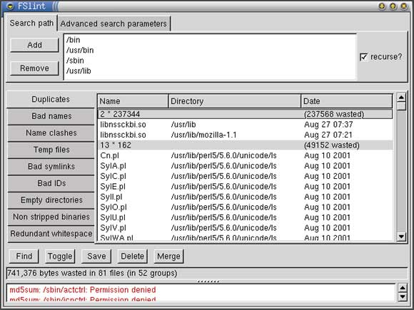
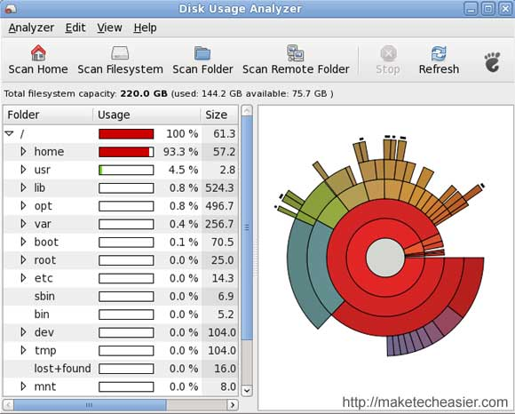

ОЧИСТКА UBUNTU
1. https://losst.ru/ochistka-sistemy-ubuntu
Со временем могло накопиться несколько копий одного файла в системе. Если нужна очистка памяти ubuntu, такие файлы важно найти и удалить, прежде чем они заполнят весь жесткий диск.
Для решения этой задачи есть несколько утилит. Утилита FSlint позволяет найти и очистить битые символические ссылки, а также дубликаты файлов в файловой системе.
Для установки программы используйте команду:
sudo apt-get install fslint
Запустить программу можно из меню Dash. В главном окне нужно указать путь, по которому следует искать дубликаты файлов, перейти на вкладку дубли и нажать в самом низу искать:

Еще одним отличным решением для поиска дублей есть утилита BleachBit, кроме поиска дубликатов файлов, здесь есть специальные приложения для нахождения дублей фото и аудиофайлов по специальным алгоритмам. Подробнее о работе с программой я писал в отдельной статье - как освободить место в Linux.
Пакеты программного обеспечения одно из самых слабых мест засорения системы. Если вы устанавливали много приложений, скорее всего, они потянули за собой большое количество зависимостей, которые после удаления этих приложений не представляют никакой пользы. Поэтому очистка ubuntu 16.04 обязательно должна включать удаление ненужных пакетов. Вот несколько команд выполняющих очистку системы:
Удалить неиспользуемые пакеты из кэша
sudo apt-get autoclean
Очистка кэша в Ubuntu, утилиты apt:
Очистка системы Ubuntu
Очистка системы Ubuntu
Система Март 21, 2016 11 admin
Ни для кого не секрет что система в процессе своей работы засоряется. Установка и удаление программ, выполнение скриптов, обновления, неверная установка программ из исходников, ошибки в программах, все это оставляет в системе лишние, ненужные пакеты. Со временем этих файлов может накапливаться достаточно большое количество.
Конечно, Ubuntu, как и любая другая операционная система Linux засоряется намного меньше Windows, здесь нет реестра, и архитектура системы рассчитана так, чтобы оставлять мусор по минимуму. Но кроме системных недочетов, в файловой системе могут накапливаться ненужные файлы пользователей и программ. Поэтому очистка ubuntu от мусора необходима.
В этой инструкции будет рассмотрена очистка системы Ubuntu. Мы рассмотрим как очистить ненужные, не используемые пакеты, удалить пользовательские файлы и уже ненужные файлы настроек, которые остались в системе, а также найдем все файлы, не принадлежащие ни одному пакету, чтобы вы могли сами оценить нужны они вам или нет. Будет рассмотрена очистка кэша в ubuntu и удаление старых ядер.
1. Использование дискового пространства
Очистка системы Ubuntu 16.04 должна начаться с выяснения, какие файлы потребляют больше всего пространства на диске. В этом вам поможет программа Использование жесткого диска. Откройте ее из меню Dash.

После завершения анализа вы можете увидеть какие файлы занимают пространство на жестком диске в процентном соотношении.
После того как вы поймете, какие файлы занимают больше всего места, вы можете:
Со временем могло накопиться несколько копий одного файла в системе. Если нужна очистка памяти ubuntu, такие файлы важно найти и удалить, прежде чем они заполнят весь жесткий диск.
Для решения этой задачи есть несколько утилит. Утилита FSlint позволяет найти и очистить битые символические ссылки, а также дубликаты файлов в файловой системе.
Для установки программы используйте команду:
sudo apt-get install fslint
Запустить программу можно из меню Dash. В главном окне нужно указать путь, по которому следует искать дубликаты файлов, перейти на вкладку дубли и нажать в самом низу искать:
Еще одним отличным решением для поиска дублей есть утилита BleachBit, кроме поиска дубликатов файлов, здесь есть специальные приложения для нахождения дублей фото и аудиофайлов по специальным алгоритмам. Подробнее о работе с программой я писал в отдельной статье - как освободить место в Linux.
Пакеты программного обеспечения одно из самых слабых мест засорения системы. Если вы устанавливали много приложений, скорее всего, они потянули за собой большое количество зависимостей, которые после удаления этих приложений не представляют никакой пользы. Поэтому очистка ubuntu 16.04 обязательно должна включать удаление ненужных пакетов. Вот несколько команд выполняющих очистку системы:
Удалить неиспользуемые пакеты из кэша
sudo apt-get autoclean
Очистка кэша в Ubuntu, утилиты apt: